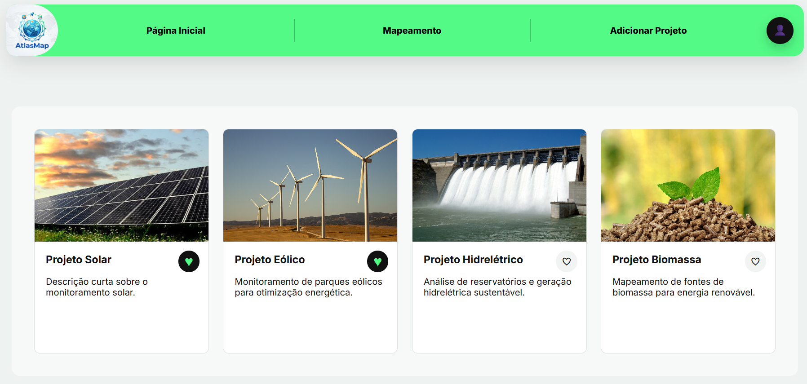
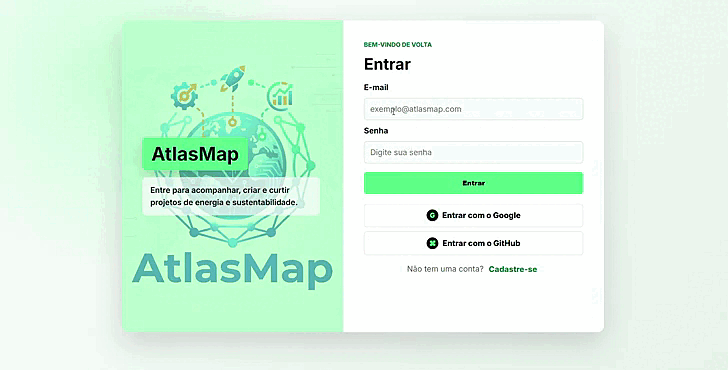
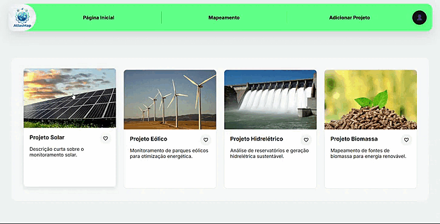
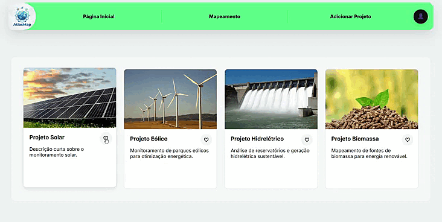
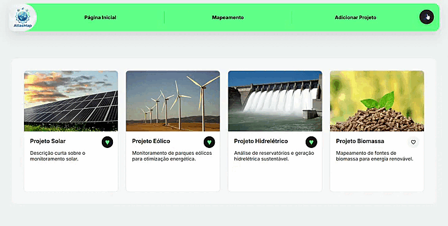
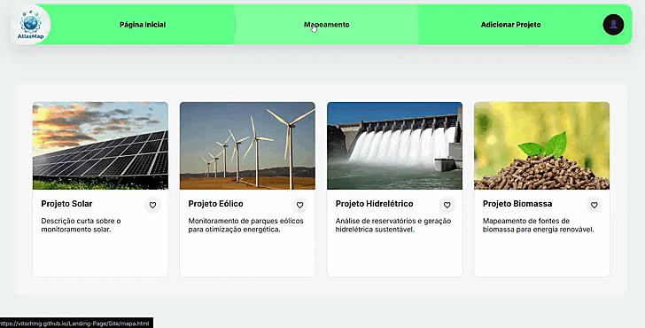

UPX • Banner Digital • Protótipo Web
AtlasMap
Uma plataforma para cadastrar, visualizar e acompanhar projetos sustentáveis em um mapa interativo, aproximando tecnologia, impacto ambiental e tomada de decisão.
Preview do protótipo

GitHub
Abrir repositório
Repositório do projeto
Acesse o código-fonte da landing page e acompanhe a organização do projeto no GitHub.
Pitch
Apresentação em vídeo
Assista ao pitch do AtlasMap com a proposta, o problema tratado e a demonstração da solução.
Contexto
Problema identificado
Projetos ambientais e energéticos costumam ficar espalhados em documentos, planilhas ou apresentações isoladas, dificultando a visualização territorial, a comparação entre iniciativas e o acompanhamento por pessoas interessadas.
Essa falta de centralização reduz a clareza sobre onde os projetos acontecem, quem é responsável por eles e quais iniciativas merecem acompanhamento, apoio ou divulgação.
Dor principal
Usuários precisam de uma forma simples de encontrar, registrar e favoritar projetos sustentáveis sem depender de arquivos soltos ou buscas manuais.
Proposta
Solução desenvolvida
O AtlasMap reúne cadastro, visualização em mapa, cards de projetos, perfil de usuário e favoritos em uma única experiência web.
01
Cadastro de projetos
Permite registrar nome, responsável, descrição e coordenadas para exibir novas iniciativas no mapa.
02
Mapeamento interativo
Exibe os projetos em uma interface geográfica com marcadores e informações resumidas.
03
Perfil e favoritos
Organiza projetos criados pelo usuário, edição de registros e lista de projetos curtidos.
Implementação
Tecnologias utilizadas
O MVP foi construído como aplicação web estática, com persistência simulada no navegador para apoiar a apresentação.
HTML5
CSS3
JavaScript
LocalStorage
Mapbox GL JS
GitHub Pages
Arquitetura
Como a solução funciona
A interface web concentra as telas de autenticação, página inicial, perfil e mapa. Os projetos criados e curtidos são armazenados no navegador por meio de LocalStorage, enquanto o mapa utiliza Mapbox GL JS para renderização geográfica.
Usuário
→
Interface AtlasMap
→
LocalStorage
→
Mapa Mapbox
Demonstração
Demonstração das funcionalidades
Veja os principais fluxos do protótipo em funcionamento: autenticação, cards, likes, perfil e mapa.
Login
Preenchimento das credenciais e entrada no protótipo.

Cards expansíveis
Clique em cada card para visualizar detalhes e a resposta de expansão da interface.

Likes nos projetos
Demonstração simples da ação de curtir cada projeto pelos botões de coração.

Perfil e curtidos
Projetos curtidos aparecem na aba de perfil; ao remover likes, a lista é atualizada automaticamente.

Mapeamento
Entrada na aba de mapeamento, seleção de pontos cadastrados e zoom para visualizar a distribuição no mapa.

Impacto
Resultados esperados e ODS
O AtlasMap apoia a divulgação e organização de iniciativas sustentáveis, facilitando o acesso a informações sobre projetos de energia, meio ambiente e impacto social.
ODS 9
Indústria, Inovação e Infraestrutura
Também se conecta a iniciativas de energia limpa, cidades sustentáveis e ação climática.
Equipe
Integrantes do projeto

Erick Lucas Oliveira
Desenvolvedor front-end e back-end.

Giovanni Leandro Lati
Desenvolvedor back-end e integração com a API.

Matheus Coelho
Criação do banco de dados e integração dos projetos.

Rodrigo Kitazono
Líder da equipe, Project Owner.

Vitor Hugo Magalhães
Prototipação e desenvolvimento front-end.
Acesse durante a apresentação
Use o QR Code para abrir esta landing page no celular e navegar até o protótipo funcional do AtlasMap.